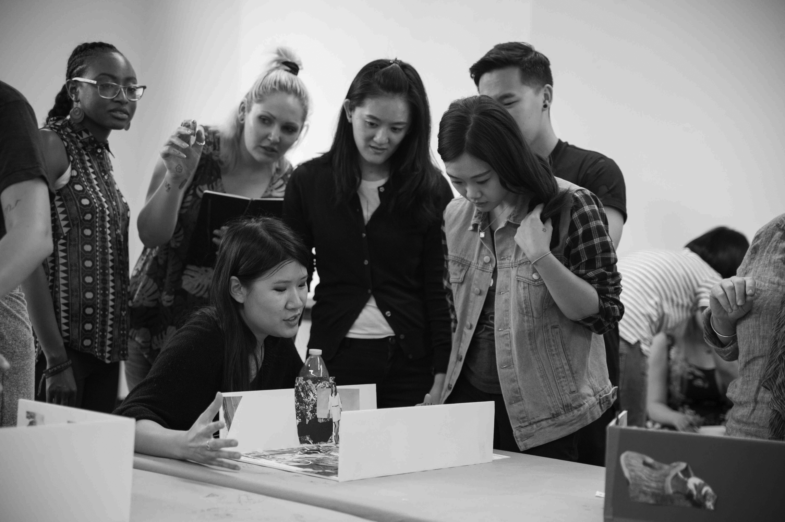
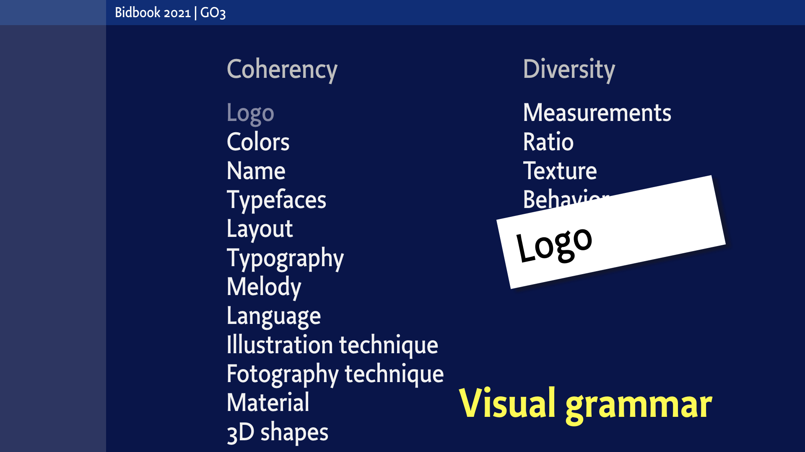
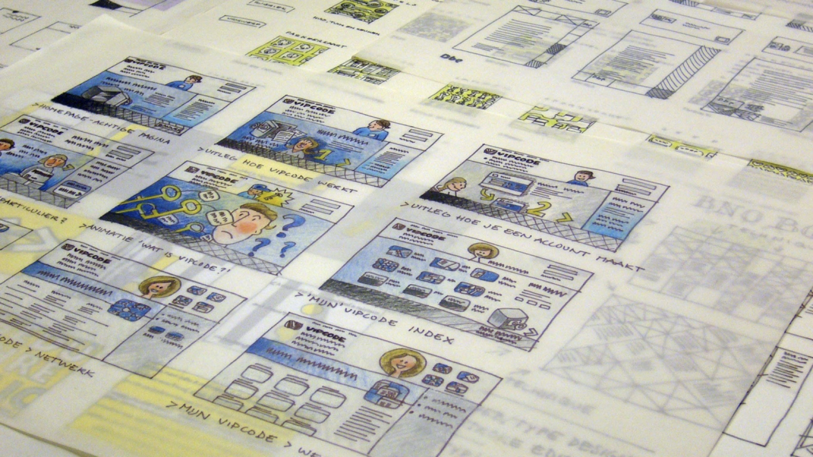

box = page['Footer']
box.html = doc.footerHtml
page = doc.newPage(title='How', name='how.html', template='home')
page.info.cssPath = 'sources/pagebot.css'
box = page['Introduction']
If your design is finished, and you are satisfied with the result, what is it that your are satisfied with?
box = page['Main']['Content']
How does it work?
Design students meet online with each other and the coaches in regular intervals.
For interaction and exchanging documents a range of techniques are available, e.g. Skype, Google Hangout, Google Docs, offline video, Dropbox, Github, FaceTime and Second Life, to name a few. Selection and usage is topic of one of the assignments.
Assignments
Students get assignments for imaginary design projects, with time frames ranging from several hours to several months. The assignments are challenges, where the specific topics can be filled by the individual students.
Questions how to approach these challenges, research on what skills need to be developed, what knowledge needs to be acquired and what techniques/materials need to be developed and how to design the planning for the project, are all part of assignments.
With regular intervals (ranging from hours to days to once per week) the various levels of intermediate results are presented to the group of students and coaches. It is the aim of the coaches to create a safe environment in which anything can be said about any aspect of the work and the process.
Safe environment
The process of creating such a safe environment and the methods for feed-back themselves are part of the assignments, and therefor subject to sketching and modification too.
In the presentations feed-back is given on the presented work, but also on the presentation itself and on the process and proceedings between presentations.
 Students are offered models for what the design process can be. And they are encouraged to created their own, and apply them to their designs.
Students are offered models for what the design process can be. And they are encouraged to created their own, and apply them to their designs.
Design methods
In the past a magnitude of design methods have been developed, but unformtunately most of them focus on production techniques and deadlines. You may recognize that in your current design practice.
What most design methods don’t do is create space for designers to develop themselves. To allow unintended mistakes. Cuddle solutions that don’t seem to be profitable right away. To spend time on acquiring skills without predefined purpose.
Yet, for the development of skill, such an approach is essential.
Design Design Space offers that environment. To study a specific topic for a defined period of time. Offering challenges, feed back, techniques and design methods that are customized to your development.
Experience
Design Design Space taps into 35 of studio projects and over 50 years of combined experience of design education. Projects ranging from corporate identities, type design, typographic software, interiors, environmental design and running Design Games.
Tuition needs to be payed before the training starts. No refunding is possible, but participants have the right to build in breaks for some period of time, if that is discussed before hand.
box = page['Main']['Side']
 Many of the assignments need collaborating with other online students, who – throughout the process – can have different roles, ranging from colleague and client to user.
Many of the assignments need collaborating with other online students, who – throughout the process – can have different roles, ranging from colleague and client to user.
 Design Game on location at OTIS College of Art and Design. Besides the development of sketching methods, the design of feedback methods is an important and integral part of every Design Design Space study
box = page['Section']['Title']
Play games with your client, rules for recognizing identities.
box = page['Section']['0']
 Imagine to ask a client which of the visule design parameters will be used for coherency or diversity. E.g. color cannot be the main recognition (“red”) and differentiate at the same time.
Imagine to ask a client which of the visule design parameters will be used for coherency or diversity. E.g. color cannot be the main recognition (“red”) and differentiate at the same time.
box = page['Section']['1']
 Nine out of ten clients will confirm that their ideal identity is best defined by a single logo, with consistent use of color, name and typeface.
Nine out of ten clients will confirm that their ideal identity is best defined by a single logo, with consistent use of color, name and typeface.
box = page['Section']['2']
 This means that all other parameters don’t have to be defined. Layout, texture, typography and language are not supposed to contribute to recognition of a brand.
This means that all other parameters don’t have to be defined. Layout, texture, typography and language are not supposed to contribute to recognition of a brand.
box = page['Section']['3']
 Or going one step further: if most of the other parameters are consistently used, they may allow a variation of different logo’s.
box = page['OtherMain']['Content']
What Design Design Space can be
- A personal environment to develop design skills, by accepting design challenges, meeting with coaches and colleage students in online feed-back sessions and presentations.
- The design of personal space (time, topic and skills) profession preparation for the rest of your life.
- a part-time sabbatical or a virtual internship
- a place to train design skills and tools.
For whom?
- Graduated designers;
- Designers with experience, working in practice;
- Designers interested in improving their process;
- Designers interested in specializing a specific topic;
- Designers interested to develop skill that make them independent from future developments.
- Designers who would like to do a follow-up refresh study, but are lacking time, finance or geographic location to make that work.
In general the aim is to get graduated students as well as experienced designers back to a space of “WOW!”.
Focus is on design students and their individual goals. Not on predefined course content.
As designer, doing the Design Design Space study, you are open minded and willing to get valuable feedback on your work.
You are interested to improve and change and to participate in the work of colleague students.
You are disciplined to work hard between online sessions, and more interested in the development of skills and challenging assignments than in assessed diploma’s.
What Design Design Space is not
- It is not an (online) course;
- It is not an (academic) study, leading to Master or PhD;
- It is not a school;
- It is not a “How to InDesign/HTML/CSS/JS/otherDesignTool” training;
- It is not a series of slides or a stack of books (although they may be very well part of it).
box = page['OtherMain']['Side']
 Developing sketching techniques should be an important part of any design study.
 Arranging a collections of objects in an arbitrary order, the layout is hard to remember or to reproduce.
Arranging a collections of objects in an arbitrary order, the layout is hard to remember or to reproduce.
 If objects are ordered by height, it needs some time to recognize the rule. But after that, it can be appied to any set of objects.
If objects are ordered by height, it needs some time to recognize the rule. But after that, it can be appied to any set of objects.
 Ordered by color, the rule is instantly clear, without the to mention to the viewer. This can easily be reproduced.
Ordered by color, the rule is instantly clear, without the to mention to the viewer. This can easily be reproduced.